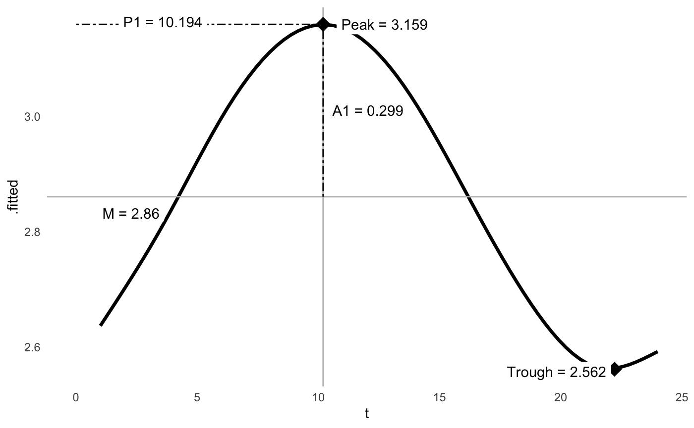
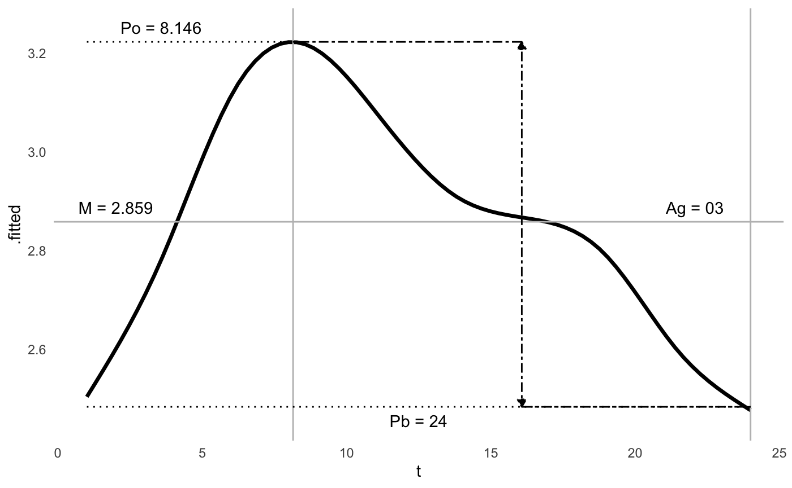

The function cosinor() is built off of literature
supporting the analysis of circadian rhythms. There are two other
packages on CRAN that provide cosinor analyses that are very good, cosinor and cosinor2. This
package was built for 1) learning about regression and model
development, and 2) the raw material generated to allow for more
expansive and experimental analysis of cosinor functions and circadian
rhythms.
library(card)
# Using the provide dataset
data("twins")
head(twins)
#> # A tibble: 6 × 23
#> # Groups: patid, hour [6]
#> patid age bmi race smoking hptn dm chf prevchd med_beta_blockers
#> <dbl> <dbl> <dbl> <fct> <fct> <fct> <fct> <fct> <fct> <fct>
#> 1 1 49 27.4 0 1 1 0 0 0 0
#> 2 1 49 27.4 0 1 1 0 0 0 0
#> 3 1 49 27.4 0 1 1 0 0 0 0
#> 4 1 49 27.4 0 1 1 0 0 0 0
#> 5 1 49 27.4 0 1 1 0 0 0 0
#> 6 1 49 27.4 0 1 1 0 0 0 0
#> # ℹ 13 more variables: med_antidepr <fct>, beck_total <dbl>, sad_bin <fct>,
#> # sad_cat <fct>, PETdiff_2 <fct>, dyxtime <dttm>, date <date>, hour <dbl>,
#> # rDYX <dbl>, sDYX <dbl>, HR <dbl>, CP <dbl>, zip <chr>The twins dataset contains clinical covariates and
continuous time measures, such as heart rate variability at each hour of
the day. These continuous measures follow a circadian pattern.
library(ggplot2)
ggplot(twins, aes(x = hour, y = rDYX)) +
geom_smooth(method = "gam")
#> `geom_smooth()` using formula = 'y ~ s(x, bs = "cs")'
Cosinor analysis can be used to generate model statistics. Confidence
intervals of the amplitude and acrophase can be generated. It is based
of the hardhat package.
The model can return information about an individual cosinor. The model statistics can be extracted, as well as visualized.
# Model
m <- cosinor(rDYX ~ hour, data = twins, tau = 24)
# Summary
summary(m)
#> Individual Cosinor Model
#> ------------------------------------------
#> Call:
#> cosinor(formula = rDYX ~ M + A1 * cos(2*pi*hour/24 + phi1)
#>
#> Period(s): 24
#>
#> Residuals:
#> Min. 1st Qu. Median Mean 3rd Qu. Max.
#> -3.12633 -0.53228 -0.03597 0.00000 0.49132 4.82150
#>
#> Coefficients:
#> Estimate Std. Error
#> mesor 2.8604855 0.006098624
#> amp1 0.2986101 0.008746706
#> phi1 -2.6687044 0.028860014
# Plot
ggcosinor(m, labels = TRUE)
#> Warning in regularize.values(x, y, ties, missing(ties)): collapsing to unique
#> 'x' values
#> `geom_smooth()` using formula = 'y ~ s(x, bs = "cs")'
More complex models can also be made using multiple components, which is represented by additional, user-defined periods.
# Model
m <- cosinor(rDYX ~ hour, data = twins, tau = c(24, 12))
# Summary
summary(m)
#> Individual Cosinor Model
#> ------------------------------------------
#> Call:
#> cosinor(formula = rDYX ~ M + A1 * cos(2*pi*hour/24 + phi1) + A2 * cos(2*pi*hour/12 + phi2)
#>
#> Period(s): 24, 12
#>
#> Residuals:
#> Min. 1st Qu. Median Mean 3rd Qu. Max.
#> -3.00770 -0.52024 -0.03247 0.00000 0.48753 4.88552
#>
#> Coefficients:
#> Estimate Std. Error
#> mesor 2.8586510 0.006062639
#> amp1 0.2964114 0.008702368
#> amp2 0.1302012 0.008542526
#> phi1 -2.6542757 0.028911445
#> phi2 -3.6636921 0.065235427
# Plot
ggcosinor(m, labels = TRUE)
#> This is a harmonic multiple-component cosinor object. The orthophase, bathyphase, and global amplitude were calculated.
#> Warning in regularize.values(x, y, ties, missing(ties)): collapsing to unique
#> 'x' values
#> `geom_smooth()` using formula = 'y ~ s(x, bs = "cs")'
And, these models can be repeated for an entire population if warranted.
# Model
m <- cosinor(rDYX ~ hour, data = twins, tau = c(24), population = "patid")
#> 18 subjects were removed due to having insufficient observations.
# Summary
summary(m)
#> Population Cosinor Model
#> ------------------------------------------
#> Call:
#> cosinor(formula = rDYX ~ M + A1 * cos(2*pi*hour/24 + phi1)
#>
#> Period(s): 24
#>
#> Residuals:
#> Min. 1st Qu. Median Mean 3rd Qu. Max.
#> -2.27890 -0.31508 -0.02126 0.00000 0.29324 3.93566
#>
#> Coefficients:
#> Confidence intervals for amplitude and acrophase for population-mean cosinor use the methods described by Fernando et al 2004, which may not be applicable to multiple-components.
#> Estimate Std. Error
#> mesor 2.8248529 0.02497310
#> amp1 0.2880224 0.01661657
#> phi1 -2.7924872 0.04034663